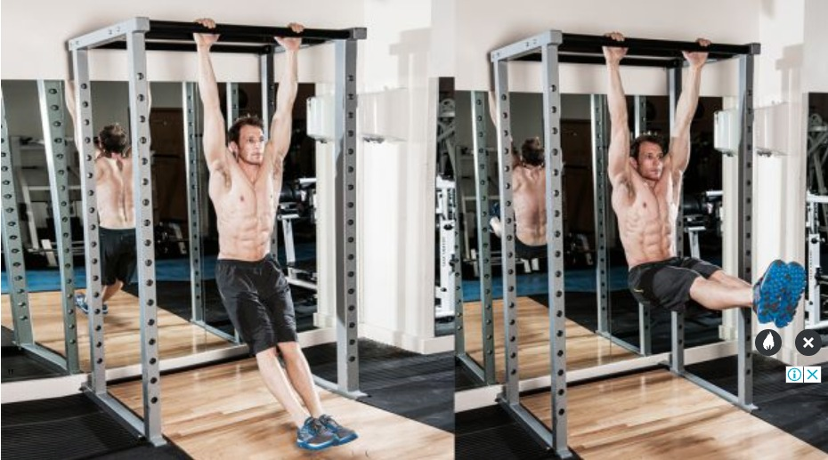

| Dumbell crunch | Reps 10 Rest 10sec Lie on your back, holding a dumbbell or weight plate across your chest in both hands. Raise your torso, then lower it, maintaining tension in your uppers abs throughout. | |
| Tuck and crunch | Reps 15 Rest 10sec Lie down with your hands by your head and your legs raised with your knees bent at a 90° angle. Simultaneously raise your torso and draw your knees towards your chest. Keep your fingers by your temples throughout and initiate each rep smoothly without jerking your torso up. Don’t let your feet touch the floor between reps. | |
| Modified v sit | Reps 12 Rest 10sec Lie with your legs raised off the floor and extended away from you so they’re parallel with the floor, and your arms straight by your sides, held off the floor. Keep your arms straight as you raise your torso and bring your legs in, bending at the knees, so that your chest meets your knees at the top of the move. Then lower under control. | |
| Hanging leg raise |  | Reps 10 Rest 10sec Fair warning, this tough exercise sets the tone for what is going to be a brutal workout involving four different hanging exercises. Start in a dead hang with your legs straight and your knees and ankles touching. Keep them together as your use your lower abs to raise them, then lower back to the start under control. |
| Dumbell curl | Sets 3 Reps 12 Tempo 2111 Rest 0sec Lie on an incline bench with a weight in each hand with palms facing forward. Curl the weights up, pause at the top, then lower back down under complete control. | |
| Preacher curl | Sets 3 Reps 10 Tempo 2111 Rest 0sec Sit at a preacher bench holding an EZ-bar with an underhand grip. Curl the bar up to the top, pause and squeeze, then lower the bar slowly until your arms are fully straight. | |
| Cable bar curl | Sets 3 Reps 15 Tempo 2111 Rest 0sec Hold a straight bar that’s attached to the lower pulley. Keeping your elbows by your sides, curl the bar up, pause, then lower under control | |
| Barbell over shoulders | A barbell overhead shoulder press (aka barbell standing shoulder press) works not just your shoulders, but most of your body. That makes it a terrific core strengthener and mass builder, among other things. To start, 1.Put your feet at shoulder-width, and tighten your core as you hold a barbell at your shoulders, palms facing forward. 2.Next, push the bar upward and squeeze your shoulder blades together at the peak. 3.Lower steadily and carefully. | |
| Seated dumbell shoulder press | To perform a seated dumbbell shoulder press, Sit on a low-back bench and hold a dumbbell in each hand at shoulder level, palms facing forward. Keeping your head and spine perfectly straight, lift the dumbbells overhead toward one another, stopping just short of having them touch at the top. Hold the position for a few seconds and then carefully reverse course. Repeat. | |
| Front squat | Set a barbell on a power rack at about shoulder height. Grab the power with an overhand grip at shoulder width and raise your elbows until your upper arms are parallel to the floor. Take the bar out of the rack and let it rest on your fingertips. Your elbows should be all the way up throughout the movement. Step back and set your feet at shoulder width with toes turned out slightly. Squat as low as you can without losing the arch in your lower back |